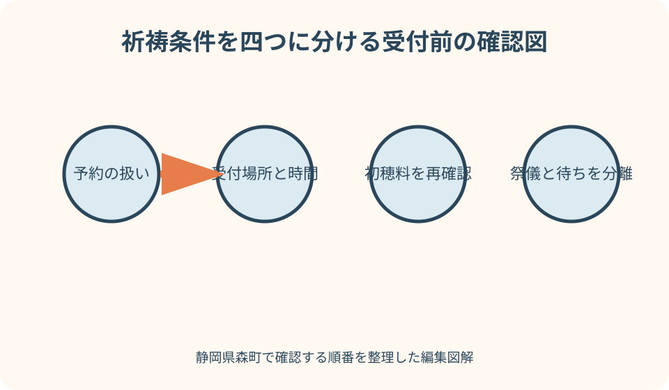
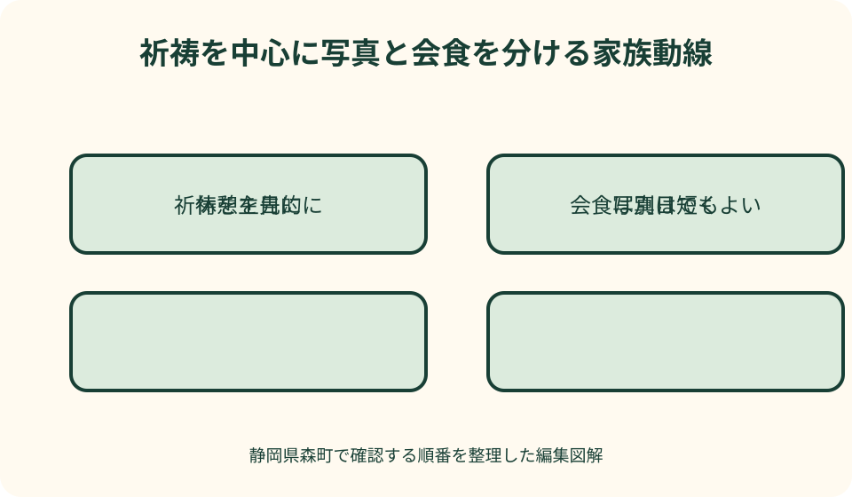

小國神社・祈祷と人生儀礼｜最終確認 2026-08-10
静岡県森町・小國神社の祈祷と七五三｜受付から家族集合までの準備
小國神社公式は、初宮詣を新生児誕生の奉告と成長を祈る祈願、七五三詣を子どもの成長を奉告し感謝を捧げる祈願として案内しています。現在の祈祷ページには受付場所、受付時間、祈祷料の目安、祭儀の所要、事前予約の扱いが掲載されていますが、将来も同じとは限りません。古い七五三記事の千歳飴や記念品を現在の確約にせず、訪問直前に現行ページを確認し、受付待ち、写真、着替え、親族集合を祈りの後へ詰め込み過ぎないことが大切です。

祈願内容を決めてから日を選ぶ
小國神社公式は、家内安全、厄除、交通安全、初宮詣、七五三詣、命名奉告など複数の祈願を案内しています。家族行事だから七五三と写真をまとめる、という外形から始めず、誰のどの節目を神前へ奉告する日かを一つ決めます。
初宮詣は、新生児の誕生を奉告し成長を祈るものと説明されています。生後何日という慣習だけで無理に訪問日を固定せず、母子の健康、授乳、季節、移動距離を優先します。医療者から外出に関する助言がある場合は、それを神社行事より先に守ります。
七五三詣は、ここまで育ったことへの感謝と今後の健やかな成長を祈る節目です。神社公式FAQは数え年と満年齢のどちらでも行われ、兄弟姉妹で一緒に祈祷する家族もいると案内しています。家族の考えと子どもの発達に合う年を選びます。
一般祈祷と子どもの祈願を同日に複数申し込む場合、祈願件数、初穂料、受付方法がどうなるかを自己計算しません。神社公式は祈願内容1件ごとの目安を示していますが、家族単位や複数名の扱いは受付へ相談します。
本記事は筆者が祈祷を受けた経験談ではありません。2026年8月10日に確認できた公式情報を土台に、家族の準備を組み立てています。神職の説明、当日の祭典、境内運用が本記事と異なる場合は、現地案内を優先します。
予約・受付・初穂料・所要を四つに分ける
確認日現在の祈祷ページは、事前予約を受けていないと記載しています。これは将来も変更されないという意味ではなく、すべての団体、特殊な祈願、行事日を同じ扱いにする根拠でもありません。訪問前に現行ページを開き、自分の祈願に当てはまるか確認します。
受付場所は拝殿正面左側の祈祷受付所と案内されています。駐車場から受付へ着いた時刻が祭儀開始時刻ではありません。申込用紙、神札準備、先に受け付けた人、祭典による会場変更があるため、後の写真や会食へ余白を置きます。
初穂料について、確認日現在の公式は祈願内容1件につき5,000円より心ざしと案内しています。古いブログや過去の七五三記事の金額を現在の確定額にせず、希望する祈願、人数、授与内容を現行ページまたは受付で確認します。
祭儀の所要は20〜30分程度と掲載されています。しかし、受付待ち、控室での待機、祈祷後の授与品確認、子どものトイレまで含む時間ではありません。家族の予定表では、公式の祭儀時間と、受付から退出までの滞在枠を別々に書きます。
受付終了近くに到着しても、必ず希望どおり受けられるとは考えません。交通混雑、子どもの着替え、申込内容の確認に時間がかかります。余裕のある時間に着くか、遅れる可能性が出た時点で神社へ相談し、無理な運転や境内で走る行動を避けます。
古い七五三案内を現在の授与品保証にしない
検索では2020年など過去の七五三祈祷案内も見つかります。そこには当時の千歳飴、記念品、期間、感染症対応が詳しく書かれています。年号を読まずに現在の内容として引用すると、子どもへ約束した授与品が受けられない可能性があります。
神社公式の人生儀礼ページやFAQには、七五三の時期と千歳飴に関する一般案内がありますが、数量、対象期間、当年の授与内容は最新のお知らせで変わり得ます。千歳飴を写真小物として必須にせず、当日授与される物をありがたく受ける予定にします。
受付時間や初穂料も、古い記事と現在の祈祷ページが同じ数字に見えても、古い方を根拠にしません。現在の総合祈祷ページ、当年のお知らせ、現地受付の順で確認します。検索結果の要約だけでなく、ページ内の更新内容を読みます。
数え年と満年齢については、神社FAQがどちらでも行われると説明しています。年齢表だけで機械的に決めず、兄弟姉妹と一緒に行うか、晴れ着を着られるか、子どもが儀礼へ参加できるかを家族で考えます。
行事の記念品より、祈祷後に受け取った神札やお守りの扱いを確認します。どこへ祀るか、家族が分かる場所へ持ち帰れるよう、折れや水濡れを防ぐ袋を用意します。車内へ置き忘れず、帰宅後に受付の説明を家族で共有します。
持参物を受付用・子ども用・家族用に分ける
受付用には、祈願を受ける人の氏名と正しい読み、生年月日、住所、祈願内容、連絡先を確認できる家族メモを作ります。これらすべてが必須記入項目だと本記事では断定せず、現行の申込用紙と受付の指示に従います。難しい漢字にはふりがなを添えます。
初穂料は、家計の現金と混ぜず、すぐ取り出せる袋へ分けます。のし袋の様式、表書き、金額の扱いに決まりがあるかは神社へ確認します。受付前に境内で慌てて書かず、筆記具と予備の無地封筒を持ちます。
子ども用には、着替え、履き慣れた靴、タオル、飲料、必要な軽食、乳幼児ならおむつと授乳用品を用意します。晴れ着だけで駐車場から往復させず、履物と上着を交換できるよう袋を分けます。使用済み品は持ち帰ります。
家族用には、参加者一覧、集合時刻、集合地点、駐車区画、緊急連絡先、会食先への連絡方法を一枚にします。親族が各自で神社名だけをナビへ入れて集合すると、異なる駐車区画で待つ可能性があります。境内の明確な施設名を集合地点にします。
撮影用の小物や大型機材は、祈祷用品より優先しません。三脚、照明、着付け用品が通路を塞ぐ場合があります。持込と撮影の可否を事前に確認し、認められていても混雑時は小型機材へ減らします。
服装は格式と子どもの動きを両立させる
祈祷へどの服装で参列するか、神社公式に一律の指定が見当たらない場合は受付へ確認します。正装でなければ祈れないと決めつけず、清潔で神前に失礼がなく、子どもと大人が安全に歩ける服装を選びます。
七五三の着物は、裾、帯、草履、髪飾りが子どもの動きを変えます。着付け直後から長距離を歩かせず、駐車場からは履き慣れた靴を使い、写真や祭儀前に履き替える方法を検討します。履き替え場所を勝手に占有せず職員へ尋ねます。
初宮詣では、乳児の体温調整と抱く大人の動きが中心です。祝い着を長時間かけたままにせず、暑さや寒さに応じて外せるようにします。抱く人が交代するときの手順を決め、階段や濡れた路面で受け渡しません。
祖父母を含む家族も、写真用の靴だけで歩かないようにします。段差、砂利、雨天の落葉を考え、必要なら撮影時だけ履き替えます。杖や歩行補助具を写真から外すことを優先せず、安全に立てることを家族写真の条件にします。
雨天は着物用の雨具だけでなく、替えの足袋や靴下、濡れ物袋、タオルを用意します。裾を持つ人、傘を持つ人、子どもの手を引く人を分けます。大人が足りなければ写真を減らし、祭儀と安全な移動だけにします。

家族集合は駐車場ではなく施設名で決める
神社公式の交通案内には複数の駐車区画があります。七五三や紅葉の時期は通常と異なる区画へ案内される可能性があり、「正面駐車場で集合」だけでは家族が合流できないことがあります。区画が分かれても歩いて集まれる境内施設を候補にします。
集合地点は、参道入口のお手洗い付近、祈祷受付前など、公式地図で確認できる場所から選びます。ただし通行を妨げる場所や受付直前を大人数で占有しません。当日の混雑を見て、少し離れた位置へ変更できる連絡方法も決めます。
集合時刻は祈祷を受けたい時刻ではなく、全員が着替え、トイレ、申込確認を終える前の時刻にします。遅れる人を待つ期限を決め、神社への相談役を一人にします。複数の親族が別々に受付へ質問して混乱させません。
公共交通で来る家族がいる場合、車組と到着時刻がずれます。森町公式の公共交通案内と運行事業者の最新時刻を使い、帰路まで確認します。車組が路上やバス停で待たず、公共交通組が境内の集合地点まで歩く計画にします。
合流できない場合の第二地点も決めます。携帯電話がつながりにくい、電池が切れる可能性に備え、一定時間後に参拝者休憩所の入口へ移るなど具体的にします。子どもを連絡役にせず、大人一人が動き、別の大人が子どもとその場に残ります。
受付・控室・祭儀を子どもの休憩でつなぐ
神社公式は、参集殿を祈祷前の控室として案内し、授乳室があることも明記しています。授乳、おむつ、着替えをどこで行えるかは、受付時に最新運用を確認します。設備があることと、希望時刻に空いていることを同一視しません。
受付前に子どものトイレと水分を整えます。申込後すぐ祭儀が始まるとは限りませんが、順番直前に家族全員で離れると案内を聞けません。受付担当、子ども担当、荷物担当を分け、呼ばれた時に連絡できる位置で待ちます。
控室では、晴れ着の子どもが走る、床へ寝転ぶ、飲食物を広げることを避けます。待ち時間が長く感じられる場合は、静かに扱える小さな本などを用意し、音の出る動画や玩具を使う前に周囲へ配慮します。
祭儀中に乳児が泣く、幼児が外へ出たいと言う可能性があります。途中退出の可否や動線を祭儀前に職員へ尋ね、家族内で付き添う人を決めます。泣かせないことを最優先にして危険な姿勢で抱き続けません。
祈祷後は授与品の内容と説明を大人が確認し、すぐ撮影場所へ移動しません。子どもの靴、着崩れ、トイレ、空腹を見て、写真、宮川、会食のどれを残すか決めます。祭儀を終えた時点で目的は達成していると考えます。
写真は祈祷動線と分離して撮る
祈祷会場や神前での撮影可否を、他の家族の写真から判断しません。祭儀中の撮影、フラッシュ、三脚、専門撮影者の同行について、神社の現在ルールを確認します。撮影できない場所では機器をしまい、儀礼へ集中します。
家族写真は、全員がそろった直後、祈祷後、帰る前の三候補を作ります。晴れ着が整っている最初に短く撮り、子どもが疲れたら残りをやめます。一か所で完璧な写真を作るため、後続の参拝者を待たせません。
写真館や出張撮影者を依頼する場合、営業撮影に該当するか、申請や立入条件があるかを撮影者任せにせず確認します。家族側も祈祷時刻、集合場所、撮影終了時刻を共有し、境内へ機材を置いたままにしません。
千歳飴や授与品を持った写真は、当年に授与される内容を確認してから考えます。過去写真と同じ袋や記念品があると子どもへ約束しません。授与品が異なっても、その年の祈りの記録として受け止めます。
雨や混雑で境内写真が難しい場合、車内、店舗、通路で無理に撮りません。帰宅後に授与品と家族で一枚撮る、別日に普段着で参拝する、写真館だけ日を分ける代案があります。儀礼日と撮影日を分けても節目の意味は失われません。
混雑日は祈祷以外を先に減らす
神社公式FAQは、七五三では11月中旬の土日祝日に参拝者が多いと説明しています。これは毎年の正確な混雑予測ではありませんが、集中しやすい時期を考える材料です。家族の都合がつくなら、日や時間帯を分散できるか最新案内と合わせて検討します。
紅葉期と七五三が重なる時期は、祈祷者以外の来訪も増えます。駐車、写真場所、食事、トイレのすべてへ余白が必要です。滞在時間を延ばすより、宮川散策と買い物を外し、祈祷と家族写真一枚だけにします。
混雑で子どもが落ち着かない場合、列を離れて休憩する、受付へ状況を伝える、別日にする順で考えます。受付順を守るため子どもを叱り続けず、家族の一人が残れるか相談します。無断で順番を外れたまま戻れると期待しません。
会食予約がある日は、祈祷終了を公式の祭儀時間だけで逆算しません。道路、受付待ち、写真、着替えを含め、遅れる場合の連絡先を保存します。店へ急ぐため境内を走ったり、子どものトイレを我慢させたりしません。
親族が多いほど、全員の希望を同日に満たすことは難しくなります。祈祷へ参列する人、写真だけ参加する人、会食で合流する人を分けても構いません。神社の参列人数や控室条件は事前に確認し、家族の希望だけで大人数を入れません。
受けられない時は受付相談・通常参拝・別日の順で考える
交通遅延、受付終了、祭典、子どもの体調により、その日に希望の祈祷を受けられない可能性があります。まず受付へ事情を伝え、当日可能な案内があるか尋ねます。古い受付情報を示して受けられるはずだと主張しません。
当日祈祷が難しくても、通常参拝が可能かを現地案内で確認します。鳥居から神前へ進める範囲で、成長への感謝を家族の言葉で伝えます。正式な祈祷と通常参拝を同じものとはせず、祈祷は改めて条件の合う日に検討します。
子どもが発熱、嘔吐、強い疲れを示す場合、通常参拝にも固執せず帰宅します。車内で休ませれば行けるという判断を繰り返さず、医療相談が必要なら優先します。親族へは中止理由を簡潔に共有し、子どもへ責任を負わせません。
遠方の親族が集まっていても、写真や会食だけを予定どおり進める必要はありません。体調のよい人だけ短く参拝し、家族行事を別日に分けます。キャンセル条件は撮影者と店へ事前に確認し、当日の連絡を一人が担当します。
日程変更では、次回も同じ受付、金額、授与品だと考えず、改めて公式ページを確認します。予定を移した時点で家族メモの日付と参加者を更新し、古いスクリーンショットを削除または過去資料と明記します。

良い点：節目を祈りと感謝の言葉にできる
初宮詣と七五三詣は、子どもの誕生と成長を家族が神前へ奉告する機会です。年齢や写真の形式だけでなく、ここまで無事に過ごせたことを言葉にできます。家族が節目の意味を共有すれば、予定を減らしても一日の中心は残ります。
神社公式に祈願内容、受付場所、初穂料の目安、祭儀時間がまとめられているため、初めての家族も確認項目を作れます。古い二次情報だけに頼らず、当事者の案内へ戻れることは大きな利点です。
参集殿の授乳室、休憩所、お手洗いなどが施設案内に掲載され、子どもの休憩場所を訪問前に把握できます。設備の利用条件は追加確認が必要ですが、問い合わせる対象を具体化できます。
車と公共交通の両方に公式の確認経路があります。家族の人数、晴れ着、乳児用品、運転者、混雑を比べて交通手段を選べます。参拝日と撮影日を分けるなど、家族の状態に合わせた組み替えも可能です。
注文したい点：当年の七五三案内を見つけやすくしてほしい
検索では過去の七五三案内が目立ち、当時の授与品や対応が現在情報に見える場合があります。各ページ上部へ対象年と終了表示を置き、現行の祈祷総合ページへ案内できると、古い内容の誤用を減らせます。
予約、受付、初穂料、祭儀時間を、一般祈祷、初宮詣、七五三、団体で分けた確認表があると便利です。共通部分と個別相談が必要な部分を区別すれば、家族は必要な質問だけを用意できます。
子ども連れ向けには、受付、控室、授乳室、お手洗い、段差の少ない動線、ベビーカー置き場を一枚で見られる図が望まれます。混雑期や祭典による会場変更も同じ図から最新情報へ進めると安心です。
授与品は毎年変わり得ること、数量に限りがある場合、写真と現物が異なる場合を当年ページで明確にできると、子どもへ誤った約束をせずに済みます。利用者側も、古い千歳飴の写真だけを現在情報として共有しない配慮が必要です。
代案・結論：祈祷・写真・会食を別々に完成させる
訪問前は現行の祈祷ページを開き、予約の扱い、受付、初穂料、祭儀時間を確認します。子どもの情報を家族メモにし、受付用、子ども用、家族用の荷物を分けます。親族へ集合地点と第二地点を送ります。
当日は受付を最優先にし、写真と会食を後へ置きます。祭儀前にトイレ、授乳、着崩れを整え、途中退出の可能性があれば職員へ相談します。祈祷後に子どもが疲れていれば、授与品を確認して帰ります。
祈祷を受けられない場合は、受付相談、通常参拝、日程変更の順で検討します。写真や会食は別日に移せます。子どもの節目を一日の予定達成で評価せず、成長への感謝を家族で共有できたかを大切にします。
結論は、現行公式へ戻ること、家族集合を具体化すること、祈祷以外を分けられることの三点です。初穂料や所要を古い数字で固定せず、当日の神社案内と子どもの状態に合わせて、静かに節目を迎えます。
大石の視点：家族行事を一日で完成させない
私（大石）は、七五三や初宮詣の相談では、写真、会食、親族集合を祈祷と同じ日に必須にしません。子どもの成長を祝う日が、子どもと保護者に最も負担の大きい日にならないよう、行事を分けます。
金額や時間も、分かりやすい数字だけを先に伝えません。公式の5,000円より、20〜30分程度という案内には、確認日と対象があります。受付待ちや複数祈願を含む総額・総時間ではないことを家族へ説明します。
親族間では、誰が申込内容を知り、誰が子どもを見て、誰が授与品を持つかを決めます。全員が善意で動くほど、受付で説明が重なり、子どもの見守りが空くことがあります。役割を少なく明確にします。
この記事の事実確認日は2026年8月10日です。祈祷、予約、受付、初穂料、授与品、施設、交通は変わる場合があります。訪問直前の神社公式を読み、家族の健康と安全を優先し、受けられない日の代案まで共有してから向かってください。
公式情報・確認先
掲載内容は次の一次情報を基礎に整理しました。営業、料金、催し、交通は変わるため、出発前または手続き前にリンク先で最新情報を確認してください。